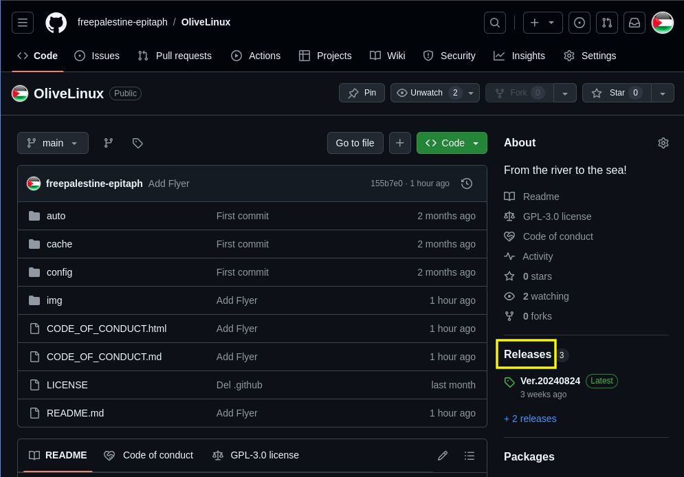

こちらはOlive LinuxというLinux(PCのOSのひとつ）のディストリビューションです。
パレスチナ連帯運動の一つとしてGNU/Debianベースで作成してみました。
Usage・Installation・Requirement・Note・Contacts
1.Releasesからisoイメージファイルをダウンロードします。 
2.isoイメージファイルをDVD-RやUSBメモリに焼きます。
3.PCに作成したDVD-R（またはUSBメモリ）を接続し起動します。
PCにインストールする場合は、左下のアイコンをクリックしてください。
ダイアログが現れるので「live」と入力して画面の指示に従ってください。
詳細はこちらを参照ください。
中身は普通のDebianなのでLive版で軽く触ってみて気に入ったらインストールして使っていただければ幸いです。
問い合わせ、ご意見、要望等はこちらまでお願いいたします。 アイコンなどのコンテンツ作成協力者募集中です。
拡散していただける場合はこちらからどうぞ
↓